Frågor på ditt eget språk
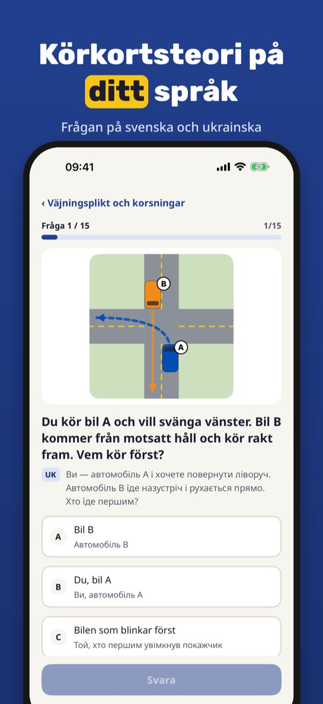
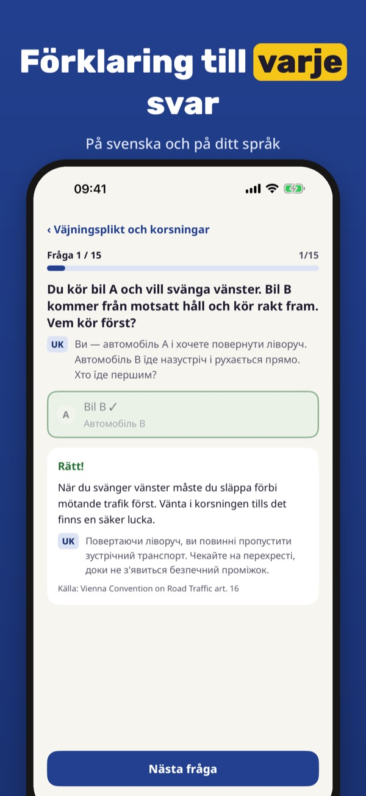
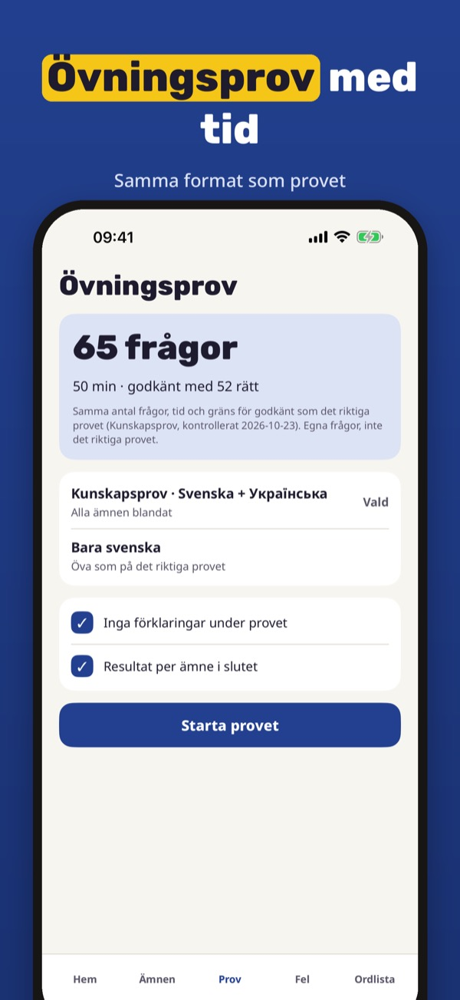
Teoriklar hjälper dig att öva teorin för körkort B när svenska inte är ditt första språk: varje fråga visas på svenska och på ditt språk.
Du kan öva 20 frågor, ordlistan och checklistan utan köp. Fullversionen är ett engångsköp som låser upp alla frågor, övningsprov och statistik. Ingen prenumeration.
Teoriklar är fristående och inte kopplad till Trafikverket eller Transportstyrelsen. Frågorna och översättningarna är våra egna. Provet bokar du hos Trafikverket.
Terms of Use (EULA): https://www.apple.com/legal/internet-services/itunes/dev/stdeula/
Privacy: https://baytechbv.github.io/privacy/korkortsteori-sprak-nordic/
Førerkortteori på ditt språk
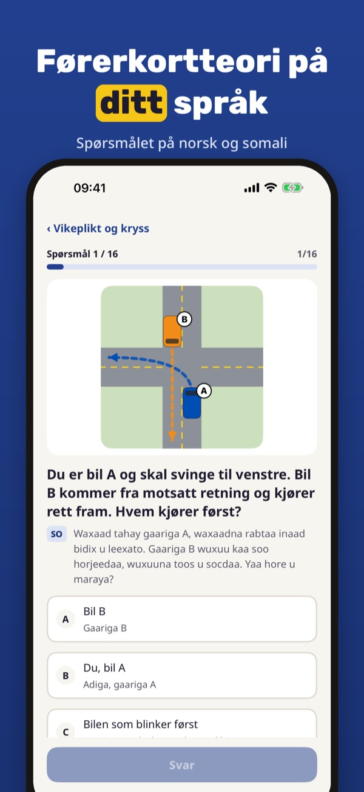
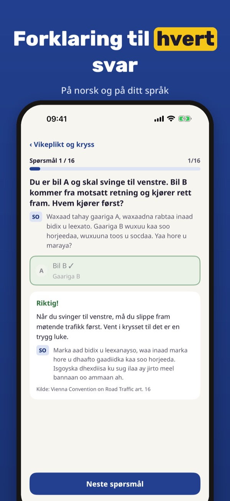
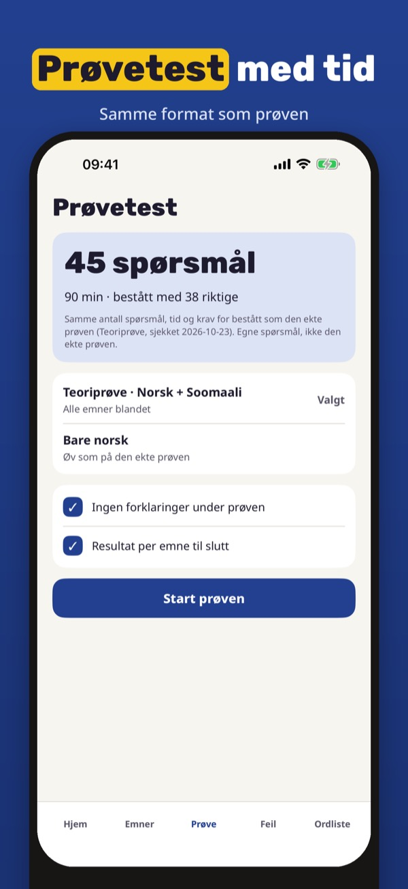
Teoriklar hjelper deg å øve til teoriprøven for klasse B når norsk ikke er førstespråket ditt: hvert spørsmål vises på norsk og på ditt språk.
Du kan øve på 20 spørsmål, ordlisten og sjekklisten uten kjøp. Fullversjonen er et engangskjøp som låser opp alle spørsmål, prøvetester og statistikk. Ingen abonnement.
Teoriklar er uavhengig og ikke tilknyttet Statens vegvesen. Spørsmålene og oversettelsene er våre egne. Prøven bestiller du hos Statens vegvesen.
Terms of Use (EULA): https://www.apple.com/legal/internet-services/itunes/dev/stdeula/
Privacy: https://baytechbv.github.io/privacy/korkortsteori-sprak-nordic/
Køreteori på dit eget sprog
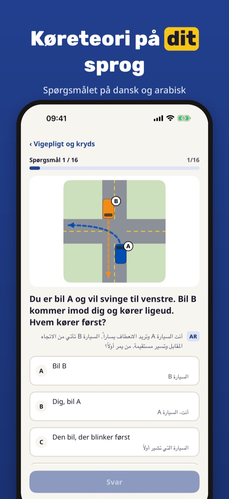
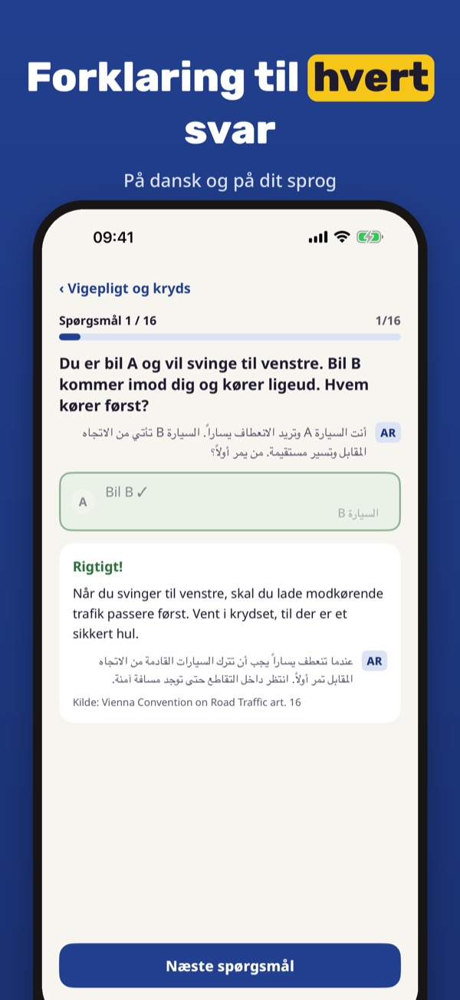
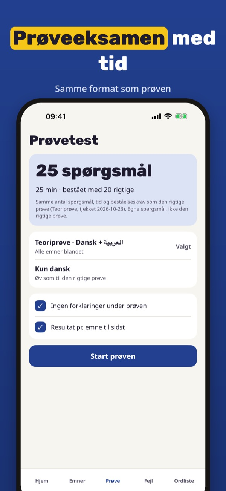
Teoriklar hjælper dig med at øve til teoriprøven til kørekort B, når dansk ikke er dit første sprog: hvert spørgsmål vises på dansk og på dit sprog.
Du kan øve 20 spørgsmål, ordlisten og tjeklisten uden køb. Den fulde version er et engangskøb, der låser alle spørgsmål, prøveeksamener og statistik op. Intet abonnement.
Teoriklar er uafhængig og ikke tilknyttet Færdselsstyrelsen eller politiet. Spørgsmål og oversættelser er vores egne.
Terms of Use (EULA): https://www.apple.com/legal/internet-services/itunes/dev/stdeula/
Privacy: https://baytechbv.github.io/privacy/korkortsteori-sprak-nordic/
Teoria myös omalla kielelläsi
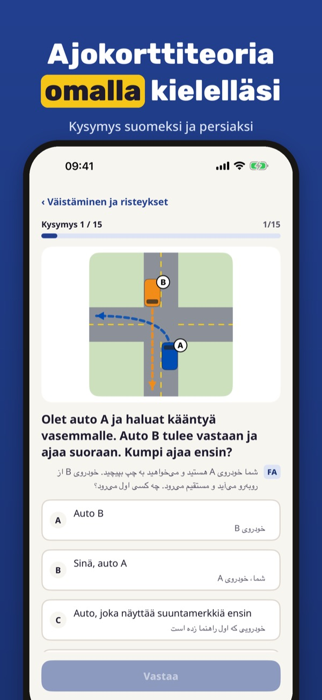
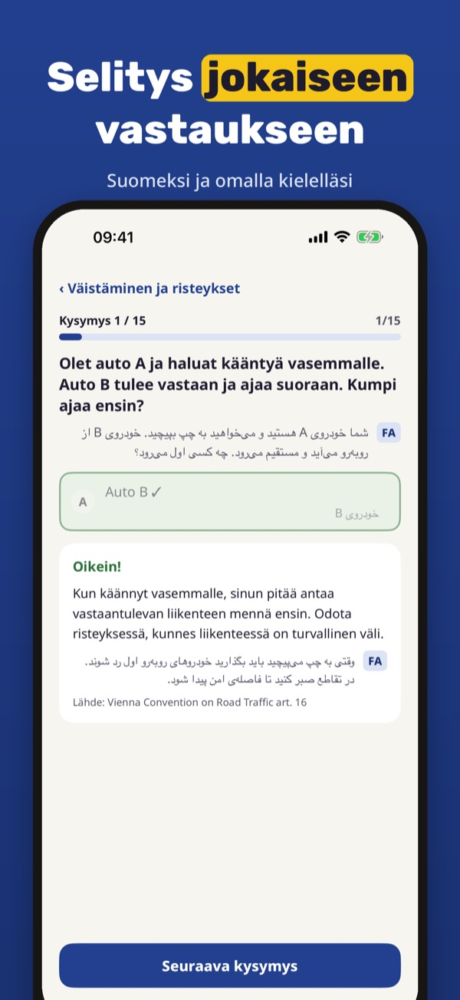
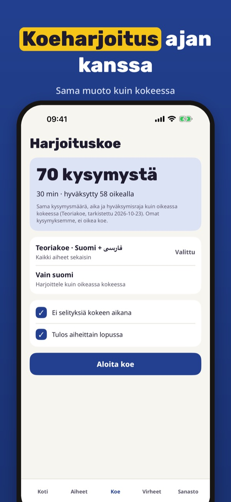
Teoriklar auttaa harjoittelemaan B-ajokortin teoriakoetta, kun suomi ei ole ensimmäinen kielesi: jokainen kysymys näkyy suomeksi ja omalla kielelläsi.
Voit harjoitella 20 kysymystä, sanastoa ja tarkistuslistaa ilman ostoa. Täysi versio on kertaosto, joka avaa kaikki kysymykset, koeharjoitukset ja tilastot. Ei tilausta.
Teoriklar on itsenäinen eikä liity Traficomiin tai Ajovarmaan. Kysymykset ja käännökset ovat omiamme.
Terms of Use (EULA): https://www.apple.com/legal/internet-services/itunes/dev/stdeula/
Privacy: https://baytechbv.github.io/privacy/korkortsteori-sprak-nordic/